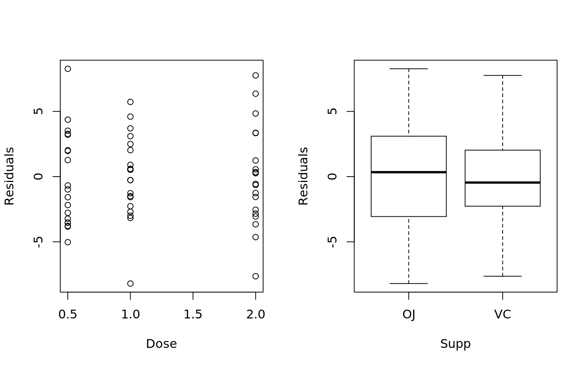

Experimental Design
Completely Random Design
The response is the length of odontoblasts (cells responsible for tooth growth) in 60 guinea pigs. Each animal received one of three dose levels of vitamin C (0.5, 1, and 2 mg/day) by one of two delivery methods, orange juice or ascorbic acid (a form of vitamin C and coded as VC).
Treatment Structure: 2 x 3 Factorial Treatment, both Fixed
- Model: \(y_{ijk} = \mu + \alpha_i + \beta_j + \alpha \beta_{ij} + e_{ijk}\)
- Treatments: \(\alpha_i = \text{supp, } \beta_j = \text{dose}\)
- Fixed Effects: \(\alpha_1 = \beta_1 = \alpha \beta_{1j} = \alpha \beta_{i1} = 0\)
Random Effects: \(e_{ijk} = N(0, \sigma^2_e)\)
library(lsmeans)
library(reshape2)
library(car)
library(plyr)
data("ToothGrowth")
## Data is numeric, but we need to force it to be a factor for the model
ToothGrowth$dose.factor = as.factor(ToothGrowth$dose)
summary(ToothGrowth) len supp dose dose.factor
Min. : 4.20 OJ:30 Min. :0.500 0.5:20
1st Qu.:13.07 VC:30 1st Qu.:0.500 1 :20
Median :19.25 Median :1.000 2 :20
Mean :18.81 Mean :1.167
3rd Qu.:25.27 3rd Qu.:2.000
Max. :33.90 Max. :2.000
0.5 1 2
OJ 10 10 10
VC 10 10 10Analysis of Variance Table
Response: len
Df Sum Sq Mean Sq F value Pr(>F)
supp 1 205.35 205.35 15.572 0.0002312 ***
dose.factor 2 2426.43 1213.22 92.000 < 2.2e-16 ***
supp:dose.factor 2 108.32 54.16 4.107 0.0218603 *
Residuals 54 712.11 13.19
---
Signif. codes: 0 '***' 0.001 '**' 0.01 '*' 0.05 '.' 0.1 ' ' 1 supp dose.factor lsmean SE df lower.CL upper.CL
OJ 0.5 13.23 1.148353 54 10.927691 15.53231
VC 0.5 7.98 1.148353 54 5.677691 10.28231
OJ 1 22.70 1.148353 54 20.397691 25.00231
VC 1 16.77 1.148353 54 14.467691 19.07231
OJ 2 26.06 1.148353 54 23.757691 28.36231
VC 2 26.14 1.148353 54 23.837691 28.44231
Confidence level used: 0.95 Tukey multiple comparisons of means
95% family-wise confidence level
Fit: aov(formula = mdl)
$supp
diff lwr upr p adj
VC-OJ -3.7 -5.579828 -1.820172 0.0002312
$dose.factor
diff lwr upr p adj
1-0.5 9.130 6.362488 11.897512 0.0e+00
2-0.5 15.495 12.727488 18.262512 0.0e+00
2-1 6.365 3.597488 9.132512 2.7e-06
$`supp:dose.factor`
diff lwr upr p adj
VC:0.5-OJ:0.5 -5.25 -10.048124 -0.4518762 0.0242521
OJ:1-OJ:0.5 9.47 4.671876 14.2681238 0.0000046
VC:1-OJ:0.5 3.54 -1.258124 8.3381238 0.2640208
OJ:2-OJ:0.5 12.83 8.031876 17.6281238 0.0000000
VC:2-OJ:0.5 12.91 8.111876 17.7081238 0.0000000
OJ:1-VC:0.5 14.72 9.921876 19.5181238 0.0000000
VC:1-VC:0.5 8.79 3.991876 13.5881238 0.0000210
OJ:2-VC:0.5 18.08 13.281876 22.8781238 0.0000000
VC:2-VC:0.5 18.16 13.361876 22.9581238 0.0000000
VC:1-OJ:1 -5.93 -10.728124 -1.1318762 0.0073930
OJ:2-OJ:1 3.36 -1.438124 8.1581238 0.3187361
VC:2-OJ:1 3.44 -1.358124 8.2381238 0.2936430
OJ:2-VC:1 9.29 4.491876 14.0881238 0.0000069
VC:2-VC:1 9.37 4.571876 14.1681238 0.0000058
VC:2-OJ:2 0.08 -4.718124 4.8781238 1.0000000Are the necessary conditions for hypothesis testing present?
- Normality: Residuals appear normally distributed per the residual normal reference plot and shapiro-wilks test
- Equal Variance: Brown-Forsythe-Levene test and residual plot supports equal variance
- Independence: No correlation in the residuals per the Durbin Watson test and plots of variables against residuals
Conditions for hypothesis testing appears to be satisfied
Shapiro-Wilk normality test
data: mdl$residuals
W = 0.98499, p-value = 0.6694
Levene's Test for Homogeneity of Variance (center = median)
Df F value Pr(>F)
group 5 1.7086 0.1484
54 plot(x = mdl$fitted.values, y = (mdl$residual - mean(mdl$residuals))/sd(mdl$residuals),
xlab = "Fitted Values", ylab = "Standardized Residuals",
main = "Equal Variance Residual Plot")
## Independence of Residuals
par(mfrow = c(1, 2))
plot(ToothGrowth$dose, mdl$residuals, xlab = "Dose", ylab = "Residuals")
plot(ToothGrowth$supp, mdl$residuals, xlab = "Supp", ylab = "Residuals")
lag Autocorrelation D-W Statistic p-value
1 -0.02932541 2.025437 0.586
Alternative hypothesis: rho != 0- Group doses so that each dose is not statistically different than any other dose in the group:
- The interaction between dose and supp are significant so we need to assess the differences in dose per each level of supp.
- OJ: {.5}, {1, 2}
- VC: {.5}, {1}, {2}
- Group supps so that each supp is not statistically different than any other supp in the group:
- The interaction is significant so we need to assess the supps at each level of dose
- .5: {OJ}, {VC}
- 1: {OJ}, {VC}
- 2: {OJ, VC}

Random Complete Block Design
An experiment was conducted to compare four different pre-planting treatments for soybeen seeds. A fifth treatment, consisting of not treating the seeds was used as a control. The experimental area consisted of four fields. There are notable differences in the fields. Each field was divided into five plots and one of the treatments was randomly assigned to a plot within each field.
- Treatment Structure: 1 Single Treatment with 5 levels
Response: The number of plants that failed to emerge out of 100 seeds planted per plot.
- Model: \(y_{ij} = \mu + \alpha_i + \beta_j + e_{ij}\)
- Treatments: \(\alpha_i = \text{Seed, } \beta_j = \text{Field, } \alpha_5 = \text{Control}\)
- Fixed Effects: \(\alpha_5 = \beta_1 = 0\)
Random Effects: \(e_{ij} = N(0, \sigma^2_e)\)
| Treatment | Field.1 | Field.2 | Field.3 | Field.4 |
|---|---|---|---|---|
| Avasan | 2 | 5 | 7 | 11 |
| Spergon | 4 | 10 | 9 | 8 |
| Semaesan | 3 | 6 | 9 | 10 |
| Fermate | 9 | 3 | 5 | 5 |
| Control | 8 | 11 | 12 | 13 |
## Make the control treatment the default level
soy$Treatment = relevel(soy$Treatment, ref = "Control")
## We only have one rep per treatment so there are not enough DF to measure the interaction
mdl = lm(Count ~ Field + Treatment, data = soy)
anova(mdl)Analysis of Variance Table
Response: Count
Df Sum Sq Mean Sq F value Pr(>F)
Field 3 49.8 16.6000 2.5971 0.10070
Treatment 4 72.5 18.1250 2.8357 0.07227 .
Residuals 12 76.7 6.3917
---
Signif. codes: 0 '***' 0.001 '**' 0.01 '*' 0.05 '.' 0.1 ' ' 10.0.0.1 Comparison of means vs control
Since we have a control variable we want to know if any of the treatment means are significantly lower than the control mean.
library(multcomp)
Dunnet = glht(mdl, linfct = mcp(Treatment = "Dunnet"), alternative = "less")
summary(Dunnet)
Simultaneous Tests for General Linear Hypotheses
Multiple Comparisons of Means: Dunnett Contrasts
Fit: lm(formula = Count ~ Field + Treatment, data = soy)
Linear Hypotheses:
Estimate Std. Error t value Pr(<t)
Avasan - Control >= 0 -4.750 1.788 -2.657 0.0325 *
Fermate - Control >= 0 -5.500 1.788 -3.077 0.0158 *
Semaesan - Control >= 0 -4.000 1.788 -2.238 0.0668 .
Spergon - Control >= 0 -3.250 1.788 -1.818 0.1307
---
Signif. codes: 0 '***' 0.001 '**' 0.01 '*' 0.05 '.' 0.1 ' ' 1
(Adjusted p values reported -- single-step method)We have significant evidence that only Avasan and Fermate are significantly lower than the control. Are they significantly different from each other?
Tukey multiple comparisons of means
95% family-wise confidence level
Fit: aov(formula = mdl)
$Field
diff lwr upr p adj
Field.2-Field.1 1.8 -2.9471482 6.547148 0.6814523
Field.3-Field.1 3.2 -1.5471482 7.947148 0.2406905
Field.4-Field.1 4.2 -0.5471482 8.947148 0.0895218
Field.3-Field.2 1.4 -3.3471482 6.147148 0.8173180
Field.4-Field.2 2.4 -2.3471482 7.147148 0.4666374
Field.4-Field.3 1.0 -3.7471482 5.747148 0.9219188
$Treatment
diff lwr upr p adj
Avasan-Control -4.75 -10.448139 0.9481388 0.1206718
Fermate-Control -5.50 -11.198139 0.1981388 0.0603205
Semaesan-Control -4.00 -9.698139 1.6981388 0.2305921
Spergon-Control -3.25 -8.948139 2.4481388 0.4074833
Fermate-Avasan -0.75 -6.448139 4.9481388 0.9926478
Semaesan-Avasan 0.75 -4.948139 6.4481388 0.9926478
Spergon-Avasan 1.50 -4.198139 7.1981388 0.9131542
Semaesan-Fermate 1.50 -4.198139 7.1981388 0.9131542
Spergon-Fermate 2.25 -3.448139 7.9481388 0.7194742
Spergon-Semaesan 0.75 -4.948139 6.4481388 0.9926478There is not significant evidence between the difference in means between any of the treatments.